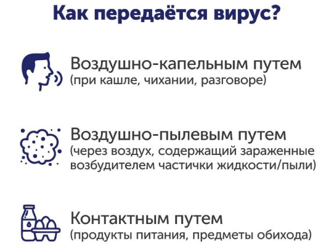
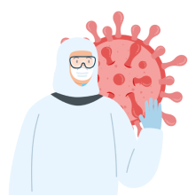
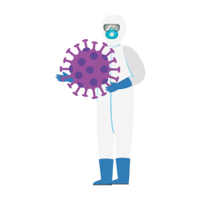

Коронавирус
Коронавирусы — это семейство РНК-содержащих вирусов, которые чаще всего вызывают заболевания у животных, а некоторые из них — у людей. У людей инфекция обычно протекает в легкой форме с симптомами ОРВИ, не вызывая тяжелых осложнений.
Откуда взялся коронавирус?
Распространение вируса SARS-CoV-2 началось с китайского города Ухань. В прошлом году там произошла мощная вспышка этого заболевания. По последним данным сегодня в мире выявлено около 34 млн случаев заражения коронавирусом.
Важно: в России 17 803 955 человек прошли тесты на коронавирус. К счастью, большинство проб не подтвердились. Заболели 3 544 623, а 2 936 991 пациентов уже выздоровели.
Симптомы и признаки коронавируса у человека
- Потеря сознания (в результате прогрессирующего разрушения лёгочных тканей),
- Сухой кашель,
- Лихорадка и повышение температуры (38 °С или выше, озноб),
- Затруднения при дыхании,
- Боли в области груди,
- Головная боль,
- Боль в мышцах,
- Общее недомогание.
Легкая форма коронавируса
Небольшая температура, слабая головная боль, повышенная утомляемость, болезненные ощущения в горле, покашливание, ломота в мышцах, легкие признаки простуды, бледность, озноб. Редко насморк.
 
Необычные симптомы коронавируса COVID-19 в Германии
Немецкий вирусолог Хендрик Стрик, наблюдавший практически всех заболевших COVID-19 в Германии, в интервью газете Frankfurter Allgemeine Zeitung поделился личным опытом. По мнению специалиста, у типичного пациента коронавируса COVID-19 только легкие симптомы. Характерны сухой раздражающий кашель и небольшая лихорадка, у 30 процентов инфицированных отмечалась диарея.
Встречались и весьма необычные признаки: примерно две трети заболевших говорили о нарушении обоняния и вкуса. В течение нескольких дней они отмечали странные ощущения. Это говорит о том, что у пациентов из Германии вирус SARS-CoV-2 проникал не только в легкие, но и в желудочно-кишечный тракт.